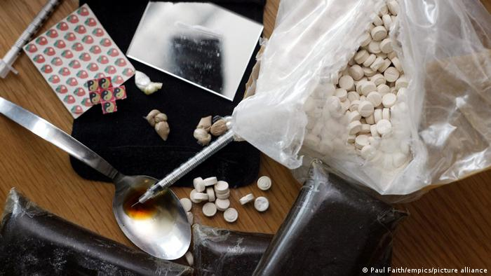

NEWS
COVID: BioNTech-Pfizer says three shots protects children under 5
A three-dose vaccine for children between the ages of 6 months and 5 years offers "high level of protection," according to the vaccine maker. The age group is considered not eligible in most countries.

BioNTech-Pfizer announced on Monday that its COVID-19 vaccine offers strong protection for children aged 6 months to 5 years old.
Pfizer said in a tweet that the company, along with BioNtech, had "shared positive data from our COVID-19 vaccine trial" involving children of that specific age group.
What did the results show?
According to a statement from the companies, three doses of vaccine administered at three micrograms in a clinical trial, brought about a strong immune response.
Vaccine efficacy was found to be 80.3%, according to preliminary results.
"We are pleased that our formulation for the youngest children, which we carefully selected to be one-tenth of the dose strength for adults, was well tolerated and produced a strong immune response," said Pfizer CEO Albert Bourla in a statement.
"The study suggests that a low 3-ug dose of our vaccine, carefully selected based on tolerability data, provides young children with a high level of protection against the recent COVID-19 strains," said Ugur Sahin, CEO and co-founder of BioNTech.
Final vaccine efficacy data will be shared once available.
Data to be evaluated
The US Food and Drug Administration (FDA) has tentative meetings planned in the coming weeks to consider authorizing COVID-19 vaccines among the youngest children.
They remain the only age group not considered eligible in most countries, a source of concern for many parents.
In September 2021, experts in a US federal advisory panel expressed concern over the necessity of giving third shots to younger Americans.
At the time, Dr. Cody Meissner of Tufts Medical Center said he was worried about extra doses being administered to younger age groups considering instances of heart inflammation seen in younger males after a second shot.
Severe disease from COVID-19 among children under the age of 5 is very rare, although it can still occur.
FDA vaccine chief Dr. Peter Marks said the agency will "move quickly without sacrificing our standards,'' as it weighs up the vaccine doses from both BioNTech-Pfizer and rival pharmaceutical company Moderna, which has a two-dose offering that is being assessed.
HAK ASASI MANUSIA
Amnesty International: Vonis Mati di Indonesia Didominasi Tindak Pidana Narkoba
Menurut Amnesty International, sekitar 82% vonis hukuman mati di Indonesia dijatuhkan pada kejahatan penyalahgunaan narkoba. Pakar pun pertanyakan bukti efek jera vonis mati.

Amnesty International (AI) Indonesia mencatat ada 114 vonis mati baru yang dijatuhkan sepanjang tahun 2021 di Indonesia. Jumlah tersebut tidak jauh berbeda dari 117 vonis yang dijatuhkan pada 2020, sebagai jumlah terbanyak dalam 5 tahun terakhir. Demikian Direktur Eksekutif AI Indonesia, Usman Hamid, mengatakan kepada DW Indonesia.
"Sampai April 2022, ada setidaknya 46 vonis mati, satu di antaranya sudah diubah menjadi vonis seumur hidup," ujar Usman Hamid.
Ia menegaskan bahwa AI menentang hukuman mati untuk segala kasus tanpa terkecuali. Namun ini tidak berarti bahwa organisasi tersebut tidak setuju bahwa mereka yang bersalah harus dihukum.
"Jika melihat tujuan dari hukuman itu sendiri, yang selama ini menimbulkan efek jera adalah kepastian adanya hukuman, bukan tingkat kekejaman hukumannya. Jadi, yang seharusnya dilakukan adalah membenahi sistem hukum yang masih melanggengkan impunitas, bukan semakin menambah tingkat kekejaman hukuman," kata Usman kepada DW Indonesia.
Periset AI Indonesia, Ari Pramuditya, menambahkan dari jumlah 114 vonis mati baru tersebut sebanyak 94 atau 82% di antaranya dijatuhkan untuk kejahatan narkoba. Selebihnya, 14 vonis mati untuk kasus pembunuhan, 6 untuk terorisme, dan 7 untuk warga negara asing asal Pakistan, Iran, dan Yaman yang bersalah akibat kejahatan narkotika.
Desak moratorium hukuman mati
Tingginya vonis hukuman mati pada tindak pidana narkotika ini tidak lain karena besarnya stigma terhadap kasus narkotika. AI menganggap bahwa di Indonesia, hukuman mati masih diyakini bisa menimbulkan efek jera, namun tanpa didasari kebijakan rasional yang berdasarkan bukti.
"Ada pula fenomena penal populism dengan tujuan untuk memperoleh simpati dari masyarakat dan interprestasi subyektif terhadap pasal 6 ayat 2 Konvensi Internasional Hak Sipil dan Politik yang memasukan kasus narkotika sebagai tindak kejahatan luar biasa sehingga dianggap dapat dimaklumi untuk dijatuhi hukuman mati di negara-negara yang belum menghapuskan hukuman mati," kata Ari Pramuditya dalam diskusi publik mengenai hukuman mati, Selasa (24/05).
Ia mengatakan bahwa masih tingginya jumlah vonis hukuman mati di Indonesia membuat AI Indonesia merekomendasikan pemerintah untuk meresmikan moratorium dan menerapkan komutasi bagi terpidana mati.
Selain itu, AI Indonesia juga berharap Kementerian Luar Negeri dan Komisi I DPR RI segera meratifikasi Protokol Opsional ke-2 Kovenan Internasional Hak Sipil dan Politik atau ICCPR, yang menjamin setiap orang untuk dapat menikmati hak-hak sipil dan politik mereka. Serta menghapuskan pidana mati dalam RUKUHP dan undang-undang lain.
"Lembaga negara yang tergabung dalam Mekanisme Pencegahan Nasional Anti-Penyiksaan untuk mengaktifkan mekanisme pemantauan pada tempat-tempat penahanan guna melihat kondisi terpidana mati, khususnya dalam konteks pencegahan penyiksaan dalam deret tunggu," ujarnya.
Efek jera, apa buktinya?
Dalam diskusi yang sama, pakar hukum tata negara, Bivitri Susanti, mengatakan menolak penerapan hukuman mati. Secara statistik ia mengatakan konstruksi hukum paling bawah yang menjadi dasar penetapan hukuman mati di Indonesia adalah KUHP. Menurutnya, KUHP adalah produk hukum lama peninggalan era Belanda. Sehingga dasar adanya hukuman mati masih sangat jelas karena paradigmanya menggunakan cara pandang tahun 1900-an.
"KUHP kita paradigmanya masih ketinggalan zaman, tapi itu yang menjadi dasar hukum di Indonesia, makanya di beberapa bagian terus dilakukan perubahan," ujar Bivitri.
Menurut Bivitri, cara pandang retributif yang mengklaim tujuan menghukum karena pelaku layak dihukum dan diklaim menimbulkan efek jera ini masih tidak dapat dibuktikan.
"Ketika kita mengatakan ada argumen efek jera, sebenarnya tidak ada buktinya, kita bukannya tidak peduli dengan kriminalitas yang meningkat, namun ada cara-cara yang tidak melanggar hak asasi manusia dan punya efek jauh lebih efektif, apabila tujuan kita bukan balas dendam," katanya.
Sementara akademisi yang juga ketua Program Studi S1 Filsafat Universitas Indonesia, Saraswati Putri, mengatakan praktik hukuman mati tidak hanya soal satu individu, tetapi juga terkait kontrol sosial dan pendisiplinan.
"Indonesia masih menerapkan hukuman mati, jika kita mengikuti hakikat UU kita, maka semestinya kita tidak lagi menormalisasi hukuman mati. Sehingga negara harus menghapuskan hukuman mati," ujar Saras.